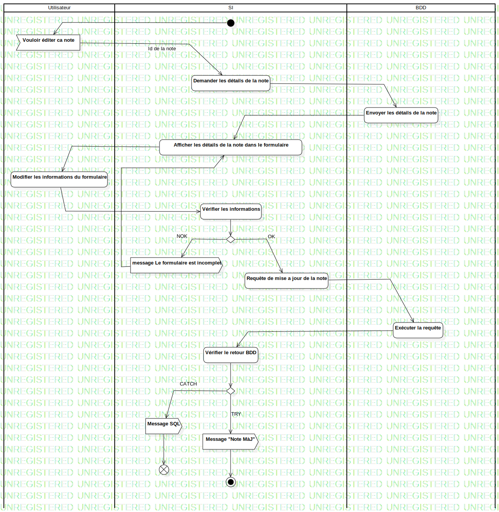

ActD Editer une note
UMLActivity
Untitled
::
Note
::
Activity Diagram
::
ActD Editer une note
Description
none
Diagrams

ActD Editer une note
Groups
Utilisateur
BDD
SI
Edges
(InitialNode1→Id de la note)
(Id de la note→Demander les détails de la note)
(Demander les détails de la note→Envoyer les détails de la note)
(Envoyer les détails de la note→Afficher les détails de la note dans le formulaire)
(Afficher les détails de la note dans le formulaire→Modifier les informations du formulaire)
(Modifier les informations du formulaire→Vérifier les informations)
(Vérifier les informations→DecisionNode1)
OK (DecisionNode1→Enreigstrer les informations modifier)
NOK (DecisionNode1→Afficher un message d'erreur)
(Afficher un message d'erreur→Afficher les détails de la note dans le formulaire)
(Enreigstrer les informations modifier→Afficher un message d'accomplissement)
(Afficher un message d'accomplissement→Afficher la note)
(Afficher la note→ActivityFinalNode1)
(InitialNode1→Vouloir éditer ca note)
Id de la note (Vouloir éditer ca note→Demander les détails de la note)
NOK (DecisionNode1→message Le formulaire est incomplet)
OK (DecisionNode1→Requête de mise a jour de la note)
(Requête de mise a jour de la note→Exécuter la requête)
(Exécuter la requête→Vérifier le retour BDD)
(Vérifier le retour BDD→DecisionNode1)
CATCH (DecisionNode1→Message SQL)
TRY (DecisionNode1→Message "Note MàJ")
(Message "Note MàJ"→ActivityFinalNode1)
(message Le formulaire est incomplet→FlowFinalNode1)
(Message SQL→FlowFinalNode2)
(message Le formulaire est incomplet→Afficher les détails de la note dans le formulaire)
Properties
Name
Value
name
ActD Editer une note
stereotype
null
visibility
public
isReentrant
true
isReadOnly
false
isSingleExecution
false
Owned Elements
ActD Editer une note